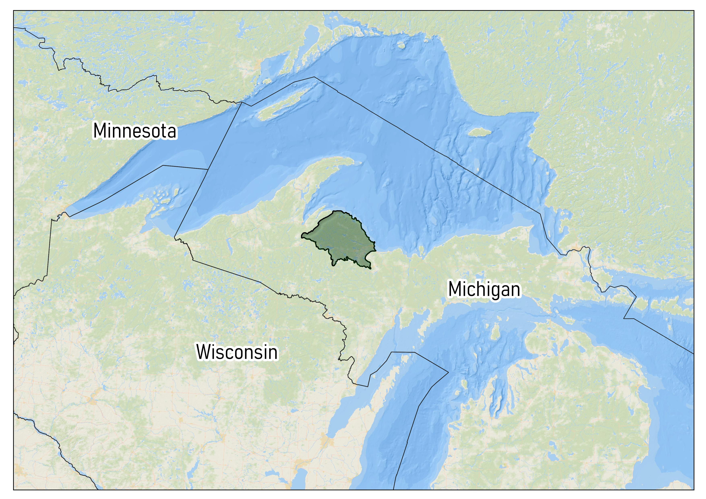

2 LANDFIRE for landscape ecosystem assessment
There are some basic steps in assessing the ecological situation of your landscape, including:
- mapping historical and current ecosystems, and the difference between the two; and further looking at representation of ecosystems inside and outside of your landscape of interest.
- assessing succession classes (aka seral states) of these ecosystems, past and present
- understanding natural disturbance regimes
These steps, while foundational and conceptually simple can be difficult due to a lack of data, especially when doing then at a landscape scale which often means looking across multiple land ownerships.

In the United States, including the insular areas LANDFIRE provides the datasets and ecological model results to get at these challenges and more. Here we walk you through some of the technical steps needed to start your analysis. We will do our work in a model landscape, the Michigamme Highlands in the Upper Peninsula of Michigan (highlighted in green in map).
2.1 This online guide…
is a technical guide originally created for The Nature Conservancy’s Global Science Gathering, working session titled “Billions (and billons) of pixels coupled with hundreds of ecosystem models: Making LANDFIRE products work for your landscape”. It was written in R using R-Studio, the “bookdown” package and is hosted on GitHub.
2.2 Getting Started
For this guide we have done some of the heavy lifting for you, i.e., the GIS work and creation of an Excel workbook [INSERT LINK HERE]. You can explore the GIS work we did, and the datasets at [INSERT LINK TO ARCMAP PROJECT HERE]